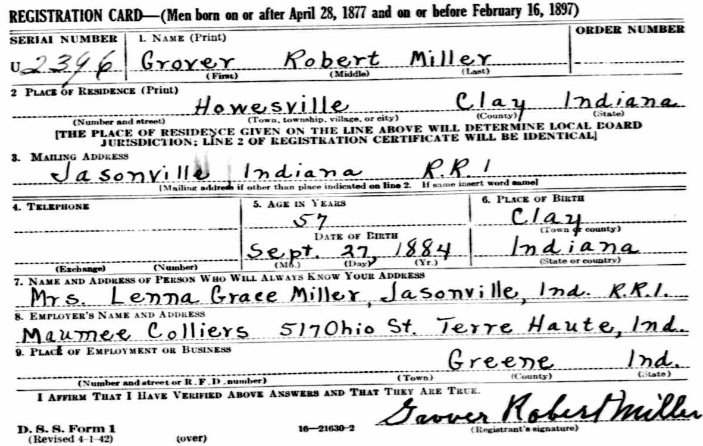
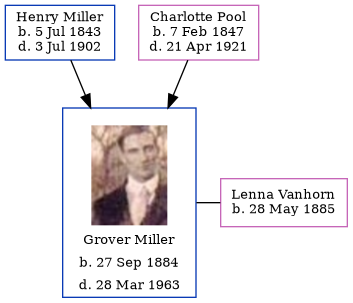

Grover Robert Miller 1884 - 1963
[ Home ] | [ Calendar ] | [ Surnames Index ] | [ Errors ] | [ Family History ]The child of Henry Miller and Charlotte Pool, Grover Miller, the third cousin three-times-removed on the mother's side of Nigel Horne, was born in Clay, Indiana, USA on 27 Sept 18841,2,3,4. He married Lenna Vanhorn in Clay on 17 Jun 19112. On 1 Jun 1900, he was living in Owen, Indiana, USA6.
He died on 28 Mar 1963 in Jasonville, Indiana1,3 and was buried at Peavey Cemetery, Howesville, Indiana after 28 Mar 19635.
Parents
- Henry William Charles was born on 5 Jul 1843
- Charlotte Maria was born on 7 Feb 1847
Citations
- Social Security Death Index - Findmypast
- United States Marriages - Findmypast
- United States Obituary Notices - Findmypast
- World War I Draft Registration Cards - Findmypast
- Find A Grave http://www.findagrave.com
- US Census 1900 - Findmypast (was the son of the head of the household)
Media
Grover Miller - WWII Registration Card

Grover Robert Miller
World War I Draft Registration Cards - USM/WWIDR/1669522280
Social Security Death Index - USBMD/SSDI/307052415
United States Marriages - R_1128534868
United States Marriages - FS/MAR/36072999/1
United States Obituary Notices - US/TRIB/035028120
United States Marriages - R_1128534868/1
Family Tree
Map
Generated by ged2site. Last updated on Jul 3, 2024
Known Issues
May have been living with father on 1 Jun 1900, but the addresses don't match or aren't detailed enough to be sure
Adding date of burial as 'aft 28 Mar 1963'